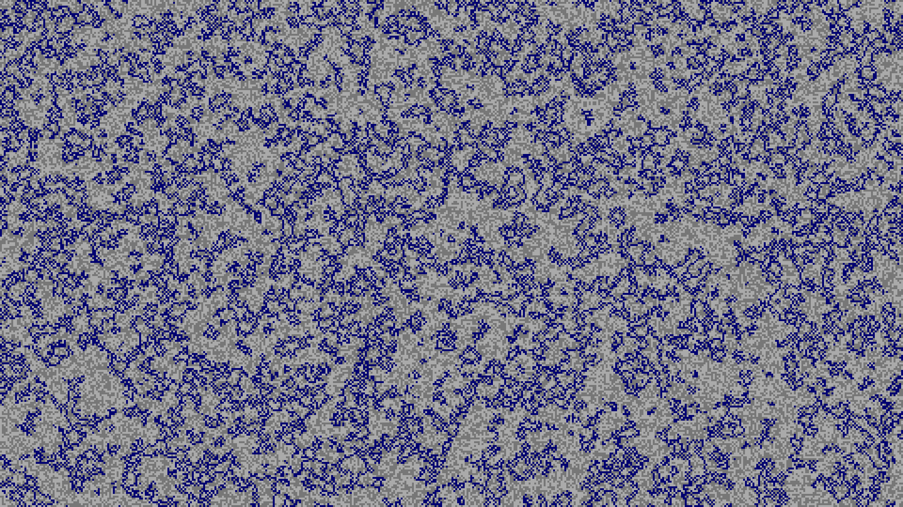
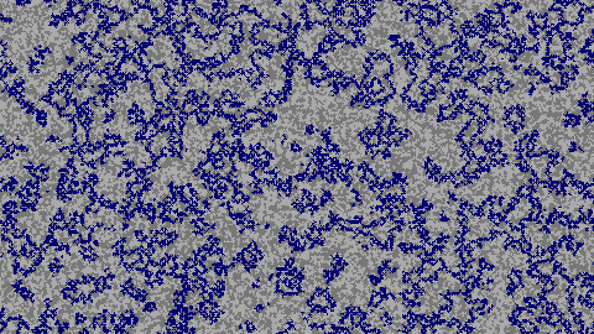
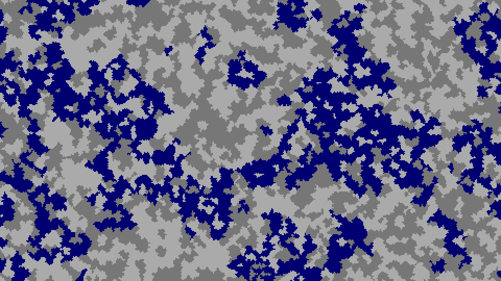
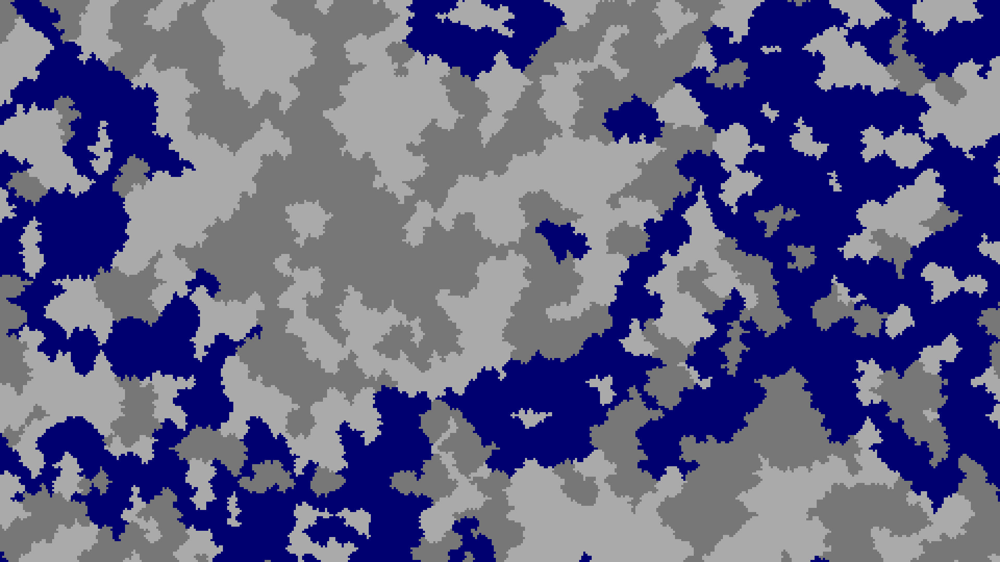
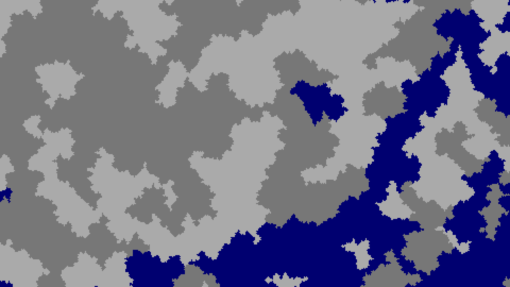
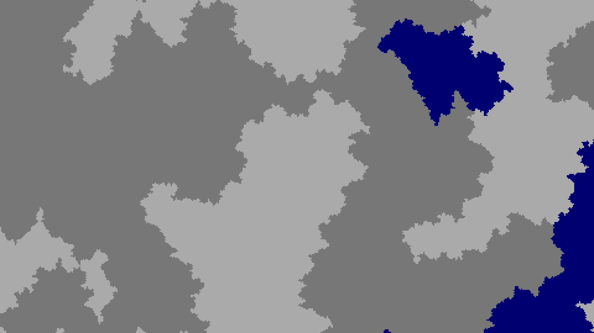
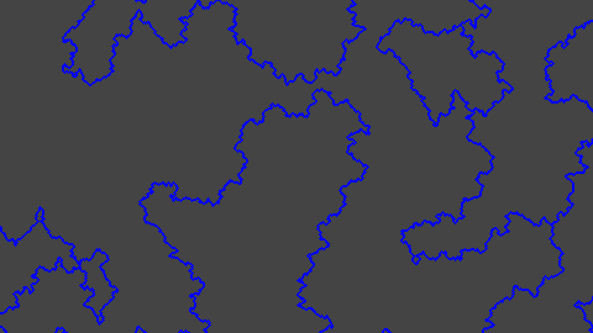

河流支线

水源
浅海区元的保持不变为 0。非海洋区元生成一个位于区间2 + [0, 299999) = [2, 300000]中的随机噪声。但实际上，最终这个噪声只会进行奇偶性的判断，故我用两种不同的灰色区别了奇偶。
 
紧接着：两次放大化
   
河流距离
河流支线先被放大化。放大的次数取决于官方名称叫河流大小（RiverSize），而我更偏向于叫它河流距离（RiverDistance）。因为这个数值越大，河流之间的间距越大，而河流宽度并不会受此影响。默认为 4，自定义（Customized） 世界类型删除后便无法修改。接着迎接河流支线的是河流层和平滑层。
值得注意的是，生物群系大小的默认值和河流距离的默认值都是 4，所以放大化次数不会因为 biomeSize 的改变而改变，导致巨型生物群系世界类型下的河流和默认世界类型下的河流大小、位置几乎无差，使得默认世界中河流常常贴合生物群系边界的，巨型生物群系中则不总是如此。

河流
紧接着：河流层会对之前河流之前传来的数据做处理：
- 如果是海洋，保持海洋 0 不变。
- 如果大于等于 2，也就是河流，奇数取 3，偶数取 2。
如果自己处理后得到的数字和四周（車）处理后得到的数字全部相同，则该区元非河流（-1，图中用灰色标识），反之为河流（7）。

紧接着：平滑

合并河流
最后河流支线被合并